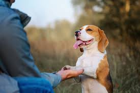

Lets see,visit and learn about human's best friends : DOGS
The significance of dogs in our lives is immeasurable. From being human’s best companions to service dogs that rescue
and protect, to therapy dogs that help in healing and de-stressing,dogs have become an integral part of
society and our lives that makes them our best friend and someone whom we can rely on.

 Click here to know more about these pure souls
Click here to know more about these pure souls